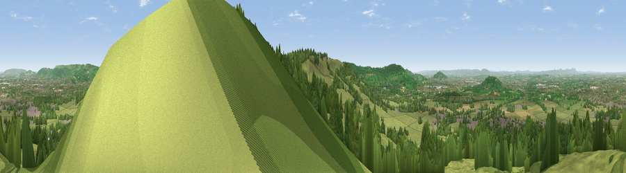

Viewpoint near Shurdington
#3570 in England · top 9% of its area beats it · near ShurdingtonThe view, rendered

A 360° render of this exact spot computed from the terrain model, tree cover and land cover — summer colours, afternoon light, calibrated against photographs of famous viewpoints. Real trees, hedges and buildings will differ in detail.
The panorama
Grey silhouette: terrain skyline in each direction (720 bearings, Earth curvature and refraction included). Dashed green: skyline with trees (+15 m) and buildings (+8 m) as obstacles. Blue strip: how far the ground is visible on each bearing.
Where the view opens
Wedge length = distance to the farthest visible ground on that bearing (vegetation-aware). Rings at 10, 25 and 50 km.
What fills the view
49% grassland · 37% woodland · 8% built-up · 6% cropland
Angular shares of the visible panorama (visual magnitude), not map area. Landscape diversity 0.48 (0–1 Shannon).
Key numbers
More beautiful places nearby
The staircase of upgrades: each row has a higher view potential than everything closer. Driving times are estimates from straight-line distance, calibrated against real road routing — check an actual route before setting out.
| Place | Direction | Drive | Score |
|---|---|---|---|
| Viewpoint near Leckhampton | ENE · 2 km | ~5 min | 77.8 |
| Viewpoint near Great Witcombe | SW · 5 km | ~11 min | 80.5 |
| Nottingham Hill | NNE · 12 km | ~22 min | 80.9 |
| Viewpoint near Bredon's Norton | N · 22 km | ~36 min | 81.3 |
| Bredon Hill | N · 23 km | ~37 min | 83.0 |
| Millennium Hill | NW · 28 km | ~44 min | 86.9 |
| Worcestershire Beacon | NNW · 32 km | ~49 min | 87.1 |
| Viewpoint near West Quantoxhead | SW · 110 km | ~135 min | 87.9 |
51.85919, -2.10196 · source: screening · position refined by local search. Computed location — check access rights before visiting.